“E se doer muito?”
Mão leve é o elogio que mais aparece nas avaliações. A sessão é no seu ritmo, com pausas sempre que precisar.
Tatuagem fine line · São Sebastião — SP
Traços finos, feitos à mão leve, no seu ritmo. Cada tatuagem pensada pra contar a sua história e envelhecer bonita com você.
Antes de marcar, a gente entende você
Mão leve é o elogio que mais aparece nas avaliações. A sessão é no seu ritmo, com pausas sempre que precisar.
Você aprova o desenho na pele antes de começar. Nada acontece sem você olhar e dizer “é isso”.
Estúdio limpo, organizado e acolhedor — um espaço que respeita e recebe todo mundo, do jeito que você é.
Por que a Bruna
Do traço fino e delicado ao preto marcante do blackwork — a Bruna domina os dois mundos com a mesma precisão.
“Não senti dor”, “mão levíssima” — não é promessa de marketing, é o que dezenas de clientes escreveram.
Do primeiro “oi” no WhatsApp até os cuidados depois de pronta, você é acompanhada em cada etapa.
Ambiente aconchegante e higienizado, no Centro de São Sebastião. Um lugar seguro pra todas as pessoas.
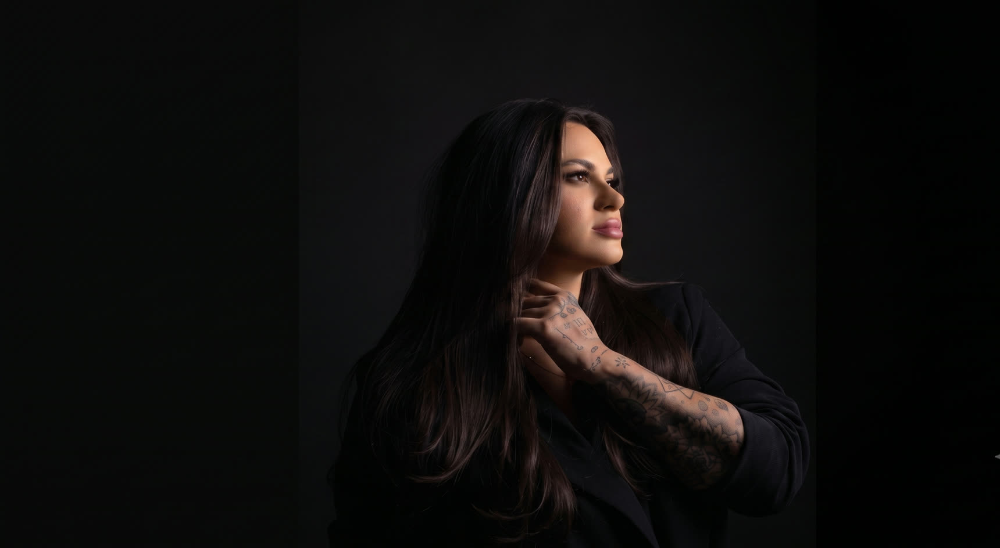
A artista
A tatuagem sempre foi, pra mim, muito mais do que estética. É sobre transformar ideias, momentos e referências em algo que faça sentido pra cada pessoa que passa pela minha bancada. Desde 2018, construo meu caminho na tattoo com dedicação, cuidado e amor pelo que faço.
Com o tempo, entendi que profissionalismo também está nos detalhes: no atendimento, na confiança, na higiene, na escuta e na forma como cada cliente se sente durante o processo.
A arte sempre fez parte de mim, e hoje tenho orgulho de transformar isso na minha profissão — criando conexões, histórias e marcas que acompanham pessoas pra sempre.
Bruna VarroTrabalhos reais
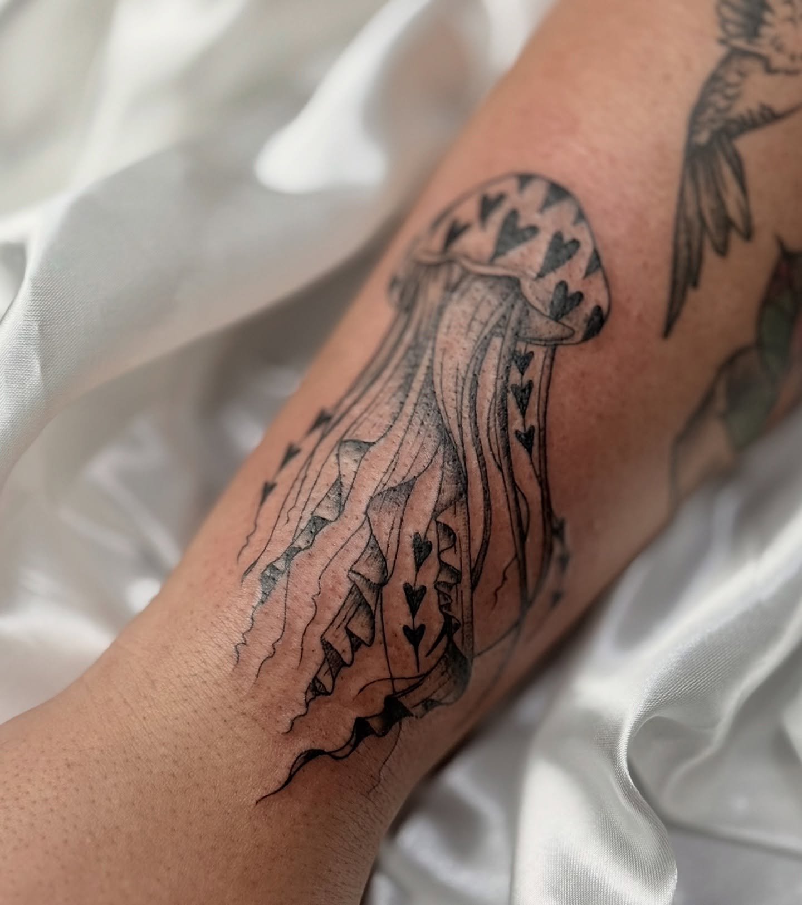
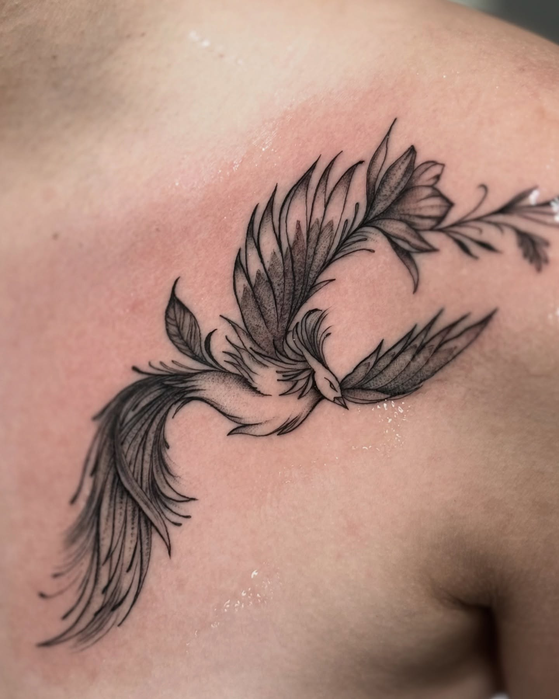
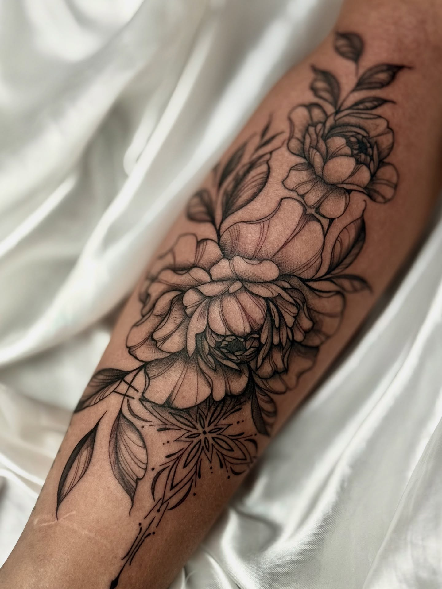
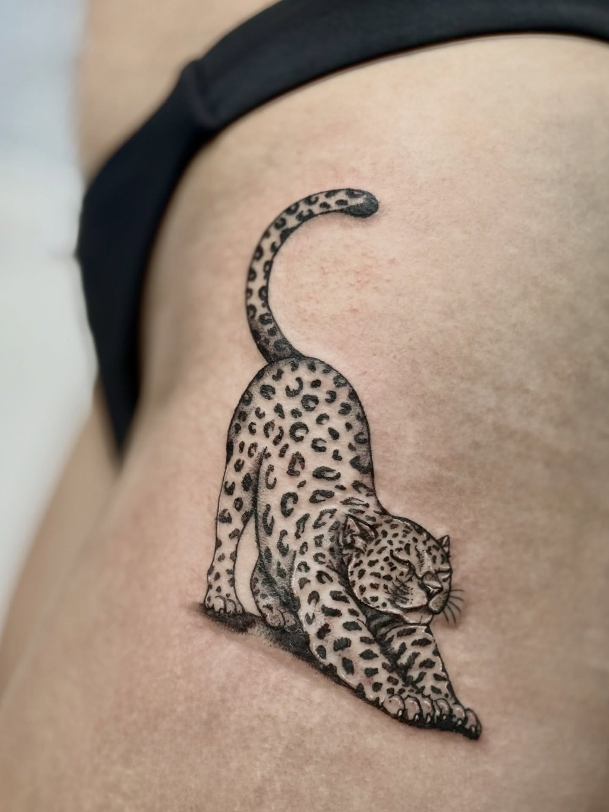
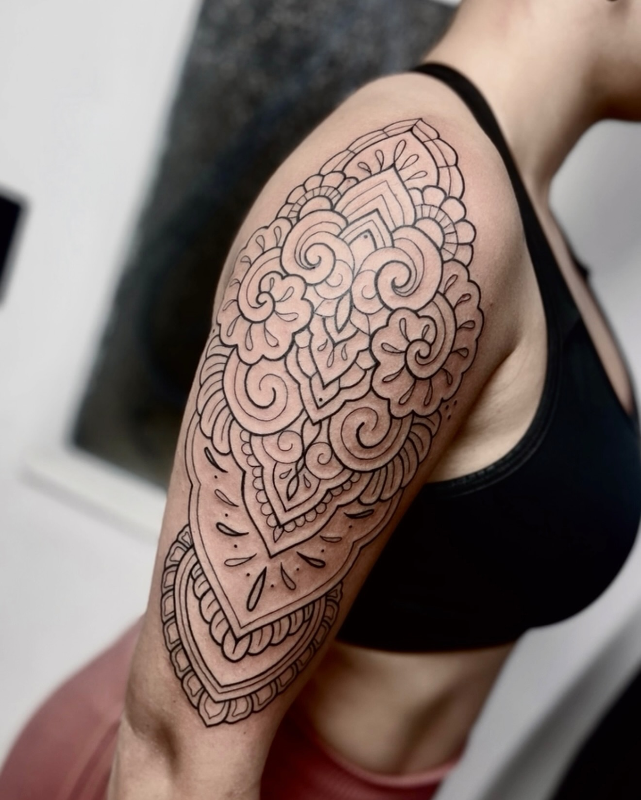
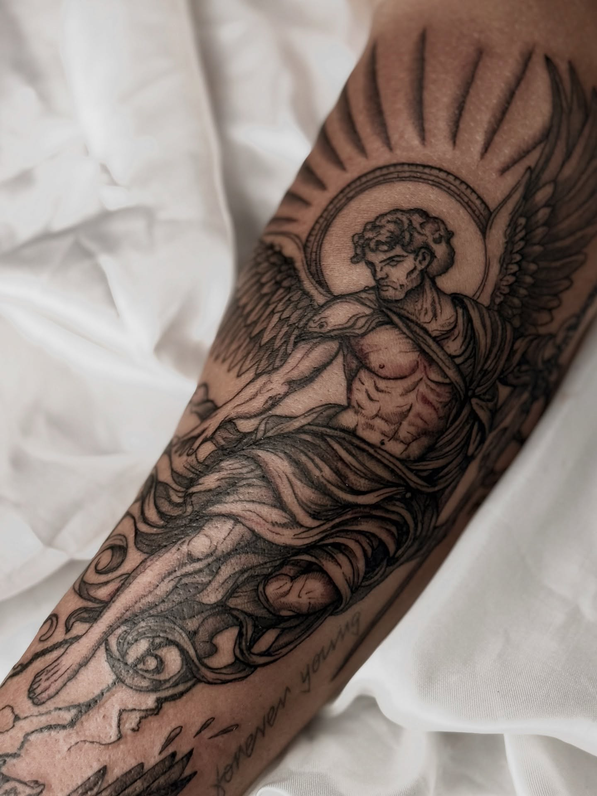
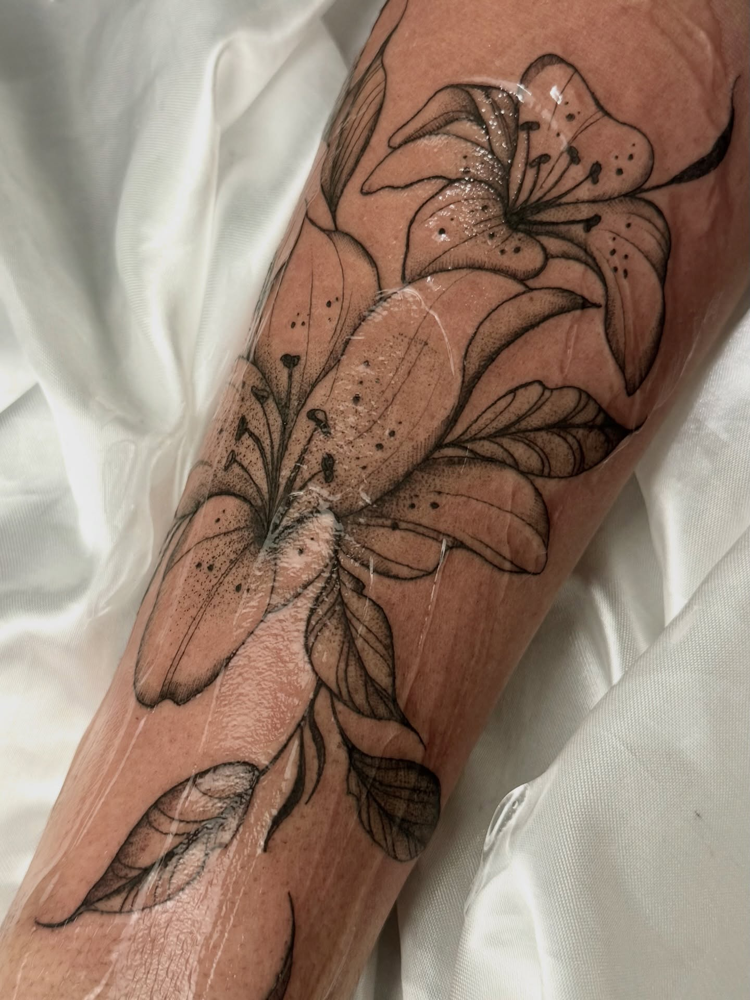
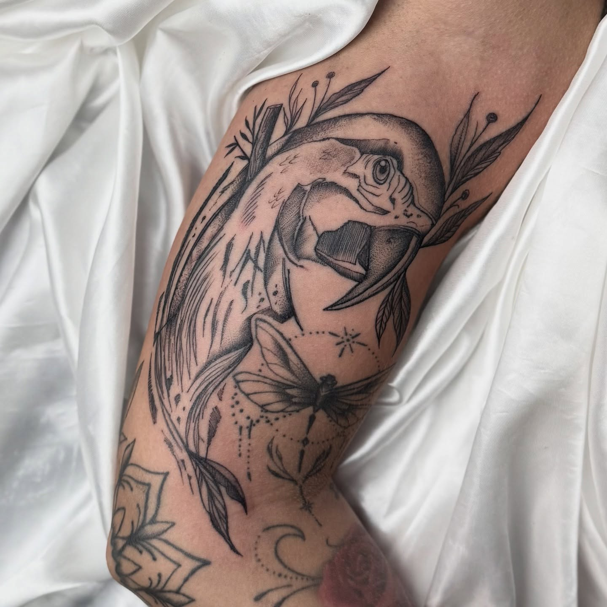
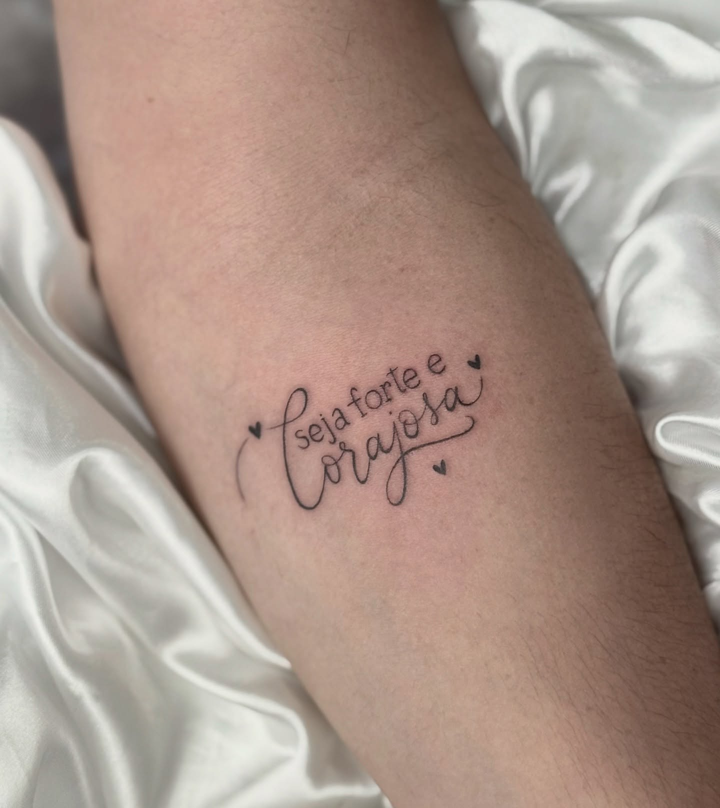
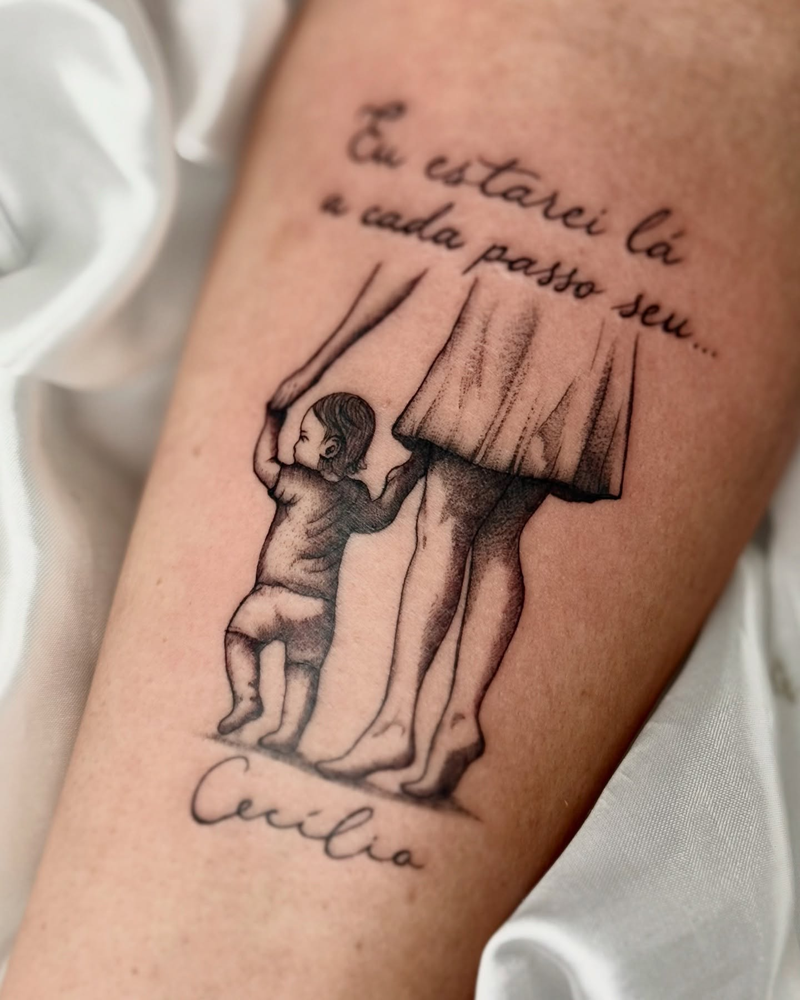
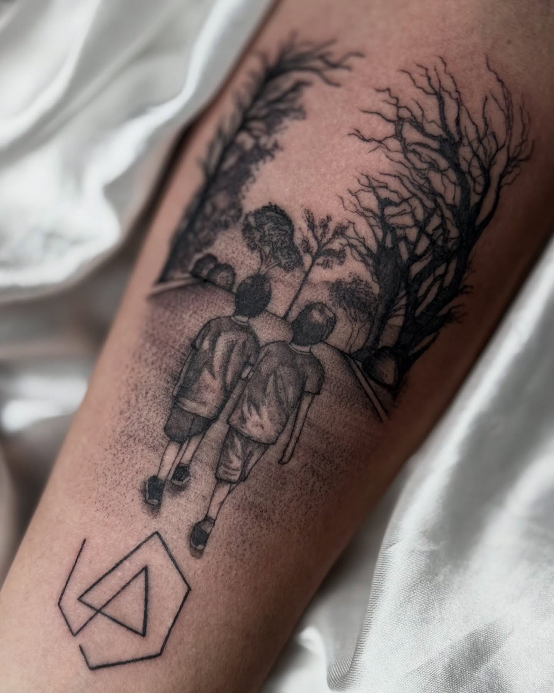
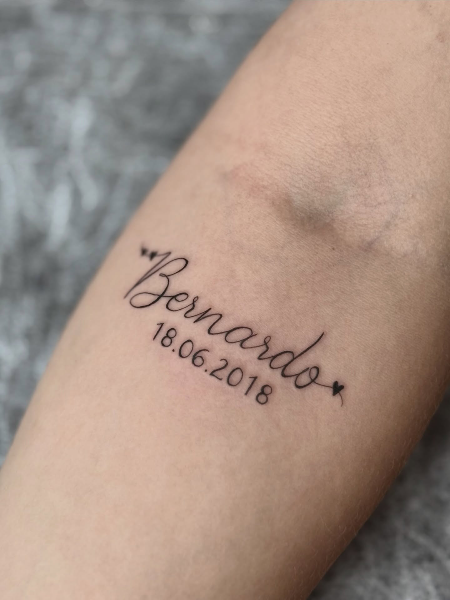
Simples do começo ao fim
Você manda sua ideia, o local do corpo e uma referência. A Bruna responde com as possibilidades.
Valor combinado e agendamento fechado. Sem surpresa e sem enrolação.
Você aprova o desenho na pele, relaxa e acompanha o traço nascendo no seu ritmo.
Sai com orientações claras pra sua tattoo cicatrizar linda e durar pra sempre.
Serviços
Cada tatuagem é única — o valor depende do tamanho, dos detalhes e do local. Você combina tudo direto pela Bruna, sem compromisso.
Traços finos, símbolos delicados, frases e desenhos pequenos.
AgendarFlorais, delicadas e detalhadas, pensadas pro seu corpo.
AgendarPreto marcante e contrastes fortes, do delicado ao autoral.
AgendarCaligrafia fina e homenagens afetivas, feitas com sensibilidade.
AgendarCobrir ou renovar uma tatuagem antiga com um traço novo.
AgendarTatuagens ao vivo pra deixar o seu evento inesquecível.
AgendarSua ideia já tem lugar aqui
Resposta rápida · atendimento com hora marcada · sem compromisso
Quem já tatuou com a Bruna
“Topas todas as minhas ideias e sempre dando aquele toque de sofisticação. Sem dúvida a melhor tatuadora do litoral.”
Jade M.
“Minha primeira tatuagem foi com ela. Me deu total confiança e liberdade. Recomendo de olhos fechados.”
Baka C.
“Fiz 4 tattoos com ela, 0 dor, mão levíssima, perfeita em tudo. Recomendadíssimo.”
Francielle S.
“Estúdio limpo e charmoso, produtos de qualidade. Ela fez exatamente como eu queria, ou até melhor.”
Ana Julia C.
Dúvidas frequentes
Cada pessoa sente diferente, mas a mão leve da Bruna é o elogio mais comum nas avaliações. Você faz no seu ritmo, com pausas sempre que quiser.
Perfeito — grande parte das clientes está fazendo a primeira. A Bruna te explica tudo, tira suas dúvidas e você aprova o desenho antes de começar.
Tudo pelo WhatsApp: você manda a ideia, o local do corpo e uma referência. Ela responde com valor e datas disponíveis.
Depende do tamanho, dos detalhes e do local. Os valores da página são referência — o preço fechado vem na conversa pelo WhatsApp.
Você sai do estúdio com orientações claras de cicatrização. Qualquer dúvida nos dias seguintes, é só chamar.
Vamos tirar sua ideia do papel
Preencha e o botão abre o WhatsApp com tudo escrito pra você. É só enviar.